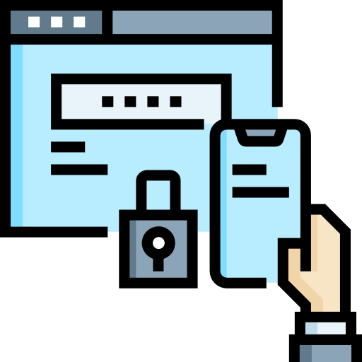

Internet Segura
Internet Segura
Segurança Digital
Golpes Mais Comuns
Como criar Senhas Seguras
Autenticação de Dois Fatores
Cuidados ao usar Wi-Fi Público
O que fazer se cair em um golpe
O que não Postar em Redes Sociais
🚨 O que fazer se cair em um golpe
É fundamental agir com rapidez se você foi vítima de golpe, fraude, furto ou roubo.
1. Altere suas senhas imediatamente
Troque as senhas de todas as contas envolvidas e também das que utilizam o mesmo e-mail.
2. Ative a Autenticação de Dois Fatores
Sempre que possível, ative o 2FA para adicionar uma camada extra de segurança às suas contas e aplicativos.

3. Registre um Boletim de Ocorrência
Não se esqueça de registrar um boletim de ocorrência, fornecendo o maior número possível de detalhes, seja presencialmente ou online.
⚠️ Denunciar é fundamental para promover medidas preventivas e evitar que outras pessoas sejam vítimas.